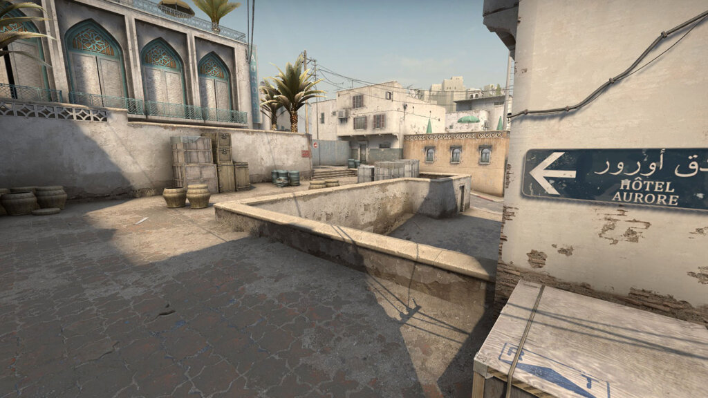
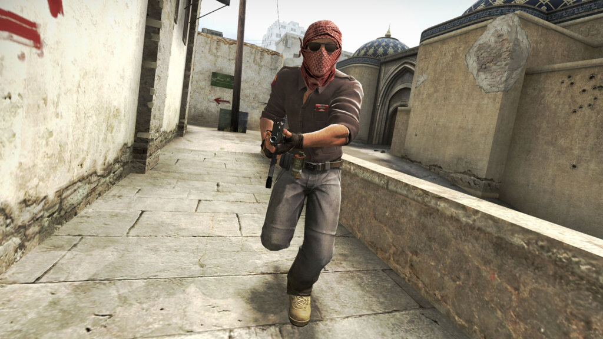
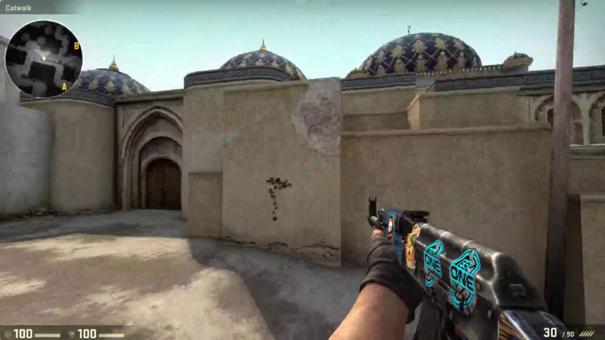
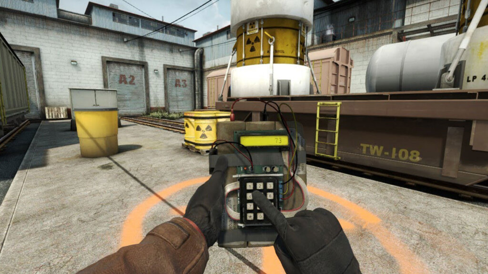
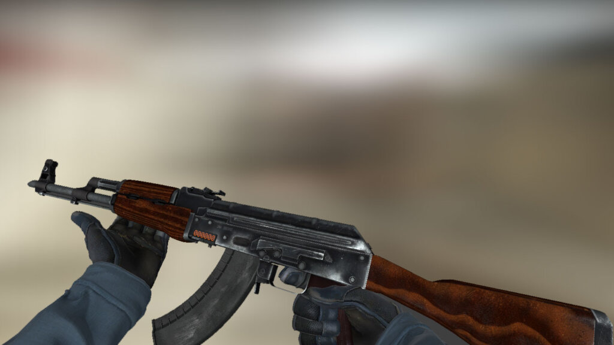

CS:GO remains one of the most popular games on Steam. If you’ve always wanted to get into it, let us explain the basics to you.

Many know Counter-Strike by name, either by playing the older iterations, or be it by seeing the still
immensely popular game on Twitch at one of the many Esports events. How do you actually start playing
the game and become a somewhat decent player in no time at all?
It of course all starts on Steam, the software distribution platform created by Valve, who also made
Counter-Strike: Global Offensive. The game itself is free to play, yet for the small price of €12,75 you
can pick up the Prime Status Upgrade. This enables you to get drops and matches you against other Prime
users. With cheaters being a possible factor in online shooters, buying this upgrade might mean you
would encounter less and it is recommended to get.
Getting the settings right
Downloading and installing are of course not that hard but when you get into the game there are a huge
amount of settings you can change. From finding the best crosshair for you, to finding the best
sensitivity or even screen resolution, the choices seem endless.
For new players it is most advisable to try and convert what you have used before in other games. Often
a calculator to do just that is just a Google query away, meaning you can just play at the same
sensitivity you used during, for instance, Overwatch or even some single player games. If you have no
prior experience in First Person Shooters, no worries, you can just try and feel out whatever
sensitivity feels best to you. It is however advisable to try to play with a relatively low sensitivity.
Most professionals and other good players use a mouse dpi of about 400 to 800 with an in-game
sensitivity ranging from 1 to 3. If your prior gaming experience comes from games like League of
Legends, it will be quite an adjustment as high sensitivity is better at those kinds of titles.
The crosshair is up to you. The colour and movement are things only you can decide. In a way, it’s your
own in-game fashion statement. The resolution doesn’t have to be hard either, as most people will just
play on the native resolution of their monitor. Some do change it to a 4:3 aspect ratio however, as it
makes the field of view smaller which in turn makes for less distractions around the centre of the
screen.
Jumping into a game
In a competitive shooter, most people would love to instantly jump into a queue of the competitive game mode in CS:GO, but before you can actually do so there is a small requirement. Players will have to achieve Private Rank 2 to be able to start their ranked experience, as it forces new players to at least get into some action to get to grips with the game before playing matches where every round can count. The easiest game to start with is of course Deathmatch. In this mode, players can either choose their weapon in the buy menu, or just get randomized weapons whenever they spawn. This will give you a good idea of what kind of weapons there are and which could fit your playstyle.
If the headshots keep coming from you, rather than the opposing forces, you can try and play the Retake mode. This mode has been developed so you will retake a bomb-site in the same fashion as you would do in a competitive game. You get to use utility and feel time pressure, much like you would later on in your journey of ranked play.
No run and gun
The Counter-Strike fanbase likes to say that their game is really complex and has some hard mechanics to understand. This actually is the case whilst comparing it with some other big FPS titles. In CS:GO for instance, you have to stand still while shooting with most weapons. There are multiple ways to go about this, with the easiest one of course being not holding a movement key anymore. Your character will slow down and eventually come to a halt. If a dynamic crosshair is being used, it will stop moving and come to rest the moment you stand still.
The harder and more efficient way is ‘counter-strafing’. To do this you have to counter the movement you are already making by pressing the opposite key. For instance, if you are moving to the right, you have to press the left key to counter that movement. At a certain moment you will come to a halt. You can just keep hold of both keys to stop and remain stopped, but you can also release the key of your prior movement and tap the counter-key to stop just that a little bit quicker. This is heavily timing-based though, so it has a higher skill ceiling and a greater chance of failure.
Spray control
Your writer has to unfortunately admit that it took him some time before he understood this was a thing in CS:GO. There is a very predictable spray pattern every weapon has in this game, especially the AK-47 and both the M4 rifles have an easy to control path you can follow. It follows the form of the number seven, which you have to counter by moving your mouse the other way.
The easiest way of practicing is to make a game for yourself, with or without bots, where you spray against the wall and see the pattern emerge. With the next magazine you can try to counter that pattern and see how you can group the impacts more closely together. This in turn will make it easier for you to spray down enemies as you are in control, not the weapon.
Ready for competitive?
If you feel you are ready to compete, or your friends are really bugging you to play with them, you can jump in when you have reached the level requirement. The goal of a competitive match is to reach 16 rounds first, or 15 if it ends up being a draw. For this, two halves will be played out, of which the second often is played in full because either team has to reach the needed 16 rounds. You either start on the Terrorist or Counter-Terrorist side at the first half and have to act accordingly.

When starting on the Counter-Terrorist side it is of vital importance you keep the Terrorists of the
bomb sites. You can either go towards the A or B site and hold down the offence that might be coming
your way. You either win the round by defusing the bomb if it is planted, kill all the opposing players
before the bomb is planted or have the timer run out before the bomb is planted. Of course you will lose
when the bomb explodes, or all of the Counter-Terrorists fall.
On the Terrorist side it is slightly easier to understand. You either let the bomb explode or kill all
the Counter-Terrorists before the timer runs out. A half will take 15 rounds, meaning that you either
play 15 rounds on the Terrorist or Counter-Terrorist side before switching.
Best weapons
When looking at the best options for weapons, there are a few to take into account. The AWP is the strongest and most expensive single shot sniper rifle. Every shot which you hit above the legs is an instant kill, unless of course there is a wall in the way. A leg shot will usually deal about 85 damage to an armoured target. You can buy this weapon regardless of which side you are on.

On the Terrorist side, the AK-47 is the usual weapon of choice. With a one shot, one kill when hitting
someone on the head while still being affordable, the weapon is one of the most used in the game. The
spray itself is quite controllable and definitely one to master if you want to improve in CS:GO.
At the Counter-Terrorist side you have two options though. The M4A4 or the M4A1-S, with the S version
being slightly cheaper. However, with this slightly cheaper option come less bullets but an easier to
control spray. The M4A4 packs a bigger punch but will be harder to control for most players, as it also
has a slightly higher fire rate.
Communicate
It is often scary to jump into a map you don’t know just yet, but the callouts in CS:GO are actually quite easy most of the time. Often you can just call out what you see or what they are hiding behind and most players will understand what you mean. As per usual, not every individual you might encounter will be as nice as you would want, but most people will try to help you out if you ask kindly. Now it’s time for you to take your dive into the amazing world of CS:GO.
Video Tutorial
This is a video tutorial for beginners about the game!.